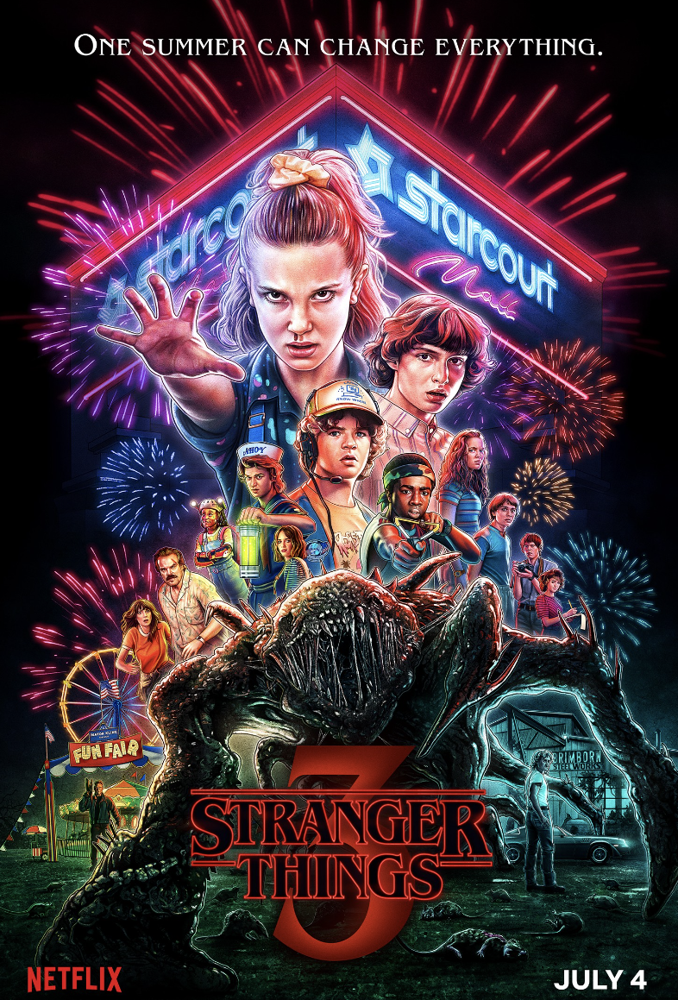

In all honesty, there is nothing that stands out about this website. All of the images are very generic, the layout isn't great, and overall it does not encompass the vibe of Rose City Coffee.
To resolve these issues, I would start by updating all of the imagery with pictures inside the business and of the products that they sell. In a similar realm, I would integrate colors that better reflect the business. I would also condense the tabs a bit. A lot of them lead to pages with very minimal information which is unnecessary. Finally, I would replace the menu images with actual type on the site that can be detected by search engines.
The most aparent problem with this website is that there are no tabs for the different pieces of information provided by the company. All of it is on one page, and it can be hard to navigate for specific information that a customer is looking for. That would be the first issue that needs to be addressed.
Similarly to Rose City, this website also needs to have a revamped menu, so that search engines can pick up the text rather than just having an image to refer to. I've also noticed when visiting this location, they have punch cards, boardgames and pictures of customer pets on the walls. Perhaps advertising these things on the website in some way could benefit the business.
I remember playing this game in elementary school when my class was learning about the Oregon Trail. Along with our lessons, we would play this game to get a better understanding of the path that was taken to travel across the country for these families. I think the simplicity of the graphics and the gameplay were what really stood out to me about this game. It was fun to be able to input your own names and choose your journey in a very accessible way. Every once in a while I'll think about it and try to play it again just for fun because it brings me back.
I chose Stranger Things as my topic for Project 1 because I binge watched it over the summer and have been obsessed with it ever since. I love the storyline, the CGI, the character development, and I felt that it had the perfect number of seasons to fit into this project. Also, it could be a way to recap what has happened in the series so far before the release of the fifth season.
I don't have a particular site that I am drawing inspiration from, but I do like this poster, and have been drawing a little bit of inspiration from it on this project:


This website drew my attention because of how the background elements move as you are scrolling down the page. In the sections with a blue background, there are smaller images that move faster than the speed of the user's scroll, making the website more visually interesting as you read it.
Another element I like about this website is that the designers added a timer at the bottom that is constantly going as long as the user is still on the page. It's a small detail but it further elevates the narrative they are trying to convey.